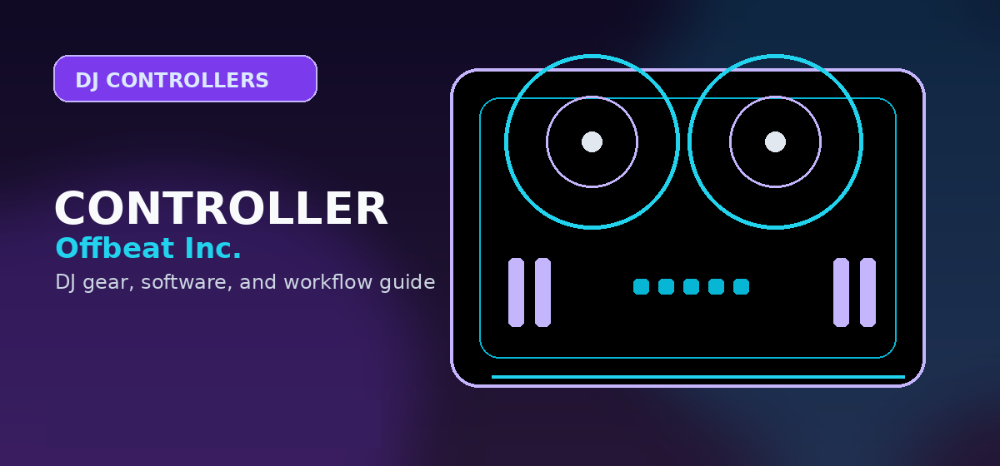

Best DJ Controllers Under $300 for Beginners (2026 Review): Pioneer, Numark, & Hercules
Best DJ controllers under $300 in 2026 — Pioneer, Numark, Hercules compared. Expert picks for beginners with honest pros, cons, and pricing.

Disclosure: This page uses affiliate links. We may earn a commission at no extra cost to you. Full disclosure →
Starting your DJ journey in 2026 is more accessible than ever. The gap between "entry-level" and "professional" gear has shrunk, with budget controllers now incorporating touch-capacitive jogs and integrated audio interfaces that were once reserved for high-end setups. For beginners, the sub-$300 price bracket is the "sweet spot"—it provides enough tactile control to learn the fundamentals of phrasing, beatmatching, and EQing without requiring a massive financial commitment. Whether you are aiming for the bedroom, a house party, or preparing for a future in the club circuit, choosing the right hardware determines how quickly you move from "pressing play" to actual performing. This guide analyzes the top contenders from Pioneer, Numark, and Hercules to help you find the perfect tool for your specific goals.
The Industry Standard: Pioneer DJ DDJ-200
If your ultimate goal is to play in clubs, starting with Pioneer is a strategic move. The DDJ-200 is designed specifically for the absolute novice, mirroring the layout of professional CDJs and DJM mixers. Its primary strength lies in its seamless integration with Rekordbox, the software used by nearly every professional DJ worldwide. By learning on the DDJ-200, you are essentially training your muscle memory for the gear you will encounter in a booth. While the jog wheels are smaller than those on the more expensive FLX series, they provide enough precision for basic scratching and cueing. It is a lightweight, USB-powered unit that turns any laptop into a full-scale DJ booth instantly.
Confirm today’s price, stock, and return policy before buying.
The Learning Machine: Hercules Inpulse 200
For those who find the learning curve of DJing intimidating, the Hercules Inpulse 200 is the gold standard for education. Its standout feature is the "Beatmatch Guide," a series of visual indicators that show you exactly which way to turn the jog wheel to sync two tracks. This eliminates the guesswork and frustration often associated with early practice. Beyond the guides, the Inpulse 200 offers a robust build and intuitive controls that work across multiple software platforms. It focuses on the "how-to" of DJing, making it the best choice for students who want to master manual beatmatching before relying on the "Sync" button.
Confirm today’s price, stock, and return policy before buying.
The Party Starter: Numark Party Mix II
Not every beginner wants to become a touring professional; some just want to bring the energy to a private party. The Numark Party Mix II is built for this exact scenario. Its most striking feature is the integrated light show that syncs with the beat of the music, transforming a living room into a dance floor. While it lacks some of the deep mixing controls found in the Hercules or Pioneer units, it excels in simplicity and portability. It is an incredibly affordable entry point that removes the barrier to entry, allowing you to experiment with mixing and transitions while providing an immediate visual impact for your audience.
Confirm today’s price, stock, and return policy before buying.
Key Features to Prioritize in 2026
When shopping for a budget controller today, do not be swayed by flashy aesthetics alone. Prioritize the "Internal Audio Interface"—look for controllers that allow you to monitor your mix through headphones while the master output goes to speakers without needing an external sound card. Additionally, check the "Software Bundle." In 2026, the value is often in the software; ensure your controller comes with a license for Serato, Rekordbox, or Virtual DJ. Finally, consider "Jog Wheel Responsiveness." Even in the budget range, look for wheels that feel firm and responsive, as this directly affects your ability to perform clean cuts and transitions.
Budget Controller Comparison Table
| Model | Approx. Price | Best For | Key Pro | Key Con |
|---|---|---|---|---|
| Pioneer DDJ-200 | $249 | Future Pros | Club-standard layout | Small jog wheels |
| Hercules Inpulse 200 | $179 | Students | Guided Beatmatching | Plastic chassis |
| Numark Party Mix II | $149 | Social DJs | Built-in light show | Limited FX options |
| Hercules Inpulse 300 | $299 | Serious Hobbyists | Full-size jog wheels | Heavier footprint |
Quick Verdict
- Best Overall: Pioneer DJ DDJ-200. Unbeatable for those who want to transition into professional club environments.
- Best for Learning: Hercules Inpulse 200. The Beatmatch Guide is a game-changer for beginners who struggle with timing.
- Best Value/Budget: Numark Party Mix II. The most affordable way to start mixing while adding a visual element to your sets.
- Best "Stretch" Budget: Hercules Inpulse 300. If you can hit the $300 limit, this offers the most "pro" feel in the budget category.
Investing in your first controller is about finding the balance between your current budget and your future ambitions. Whether you choose the educational power of Hercules, the party vibes of Numark, or the industry prestige of Pioneer, the best gear is the one that gets you to actually start mixing. Ready to start your first set? Check out our recommended deals via the affiliate links below to grab the best current pricing on these 2026 top picks.
Bottom line: For most new DJs shopping under $300, start by comparing the Hercules DJControl Inpulse 300 MK2, Numark Mixtrack Platinum FX, and entry Pioneer options by software, audio outputs, and bundle price. Check current beginner controller prices on Amazon → Then compare the upgrade path in controllers under $500 before buying.
Shop on Amazon
Browse budget DJ controllers on Amazon — filter by price, verified ratings.
Also Available on zZounds
Affordable controllers — compare prices across retailers.